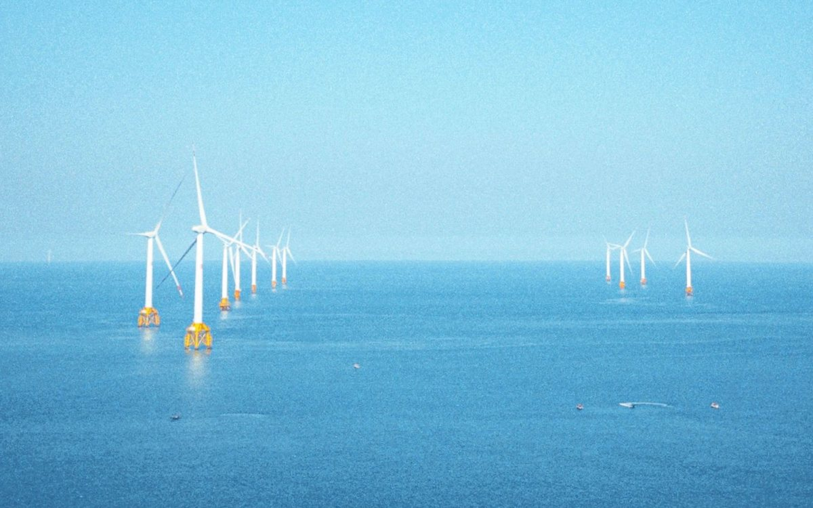
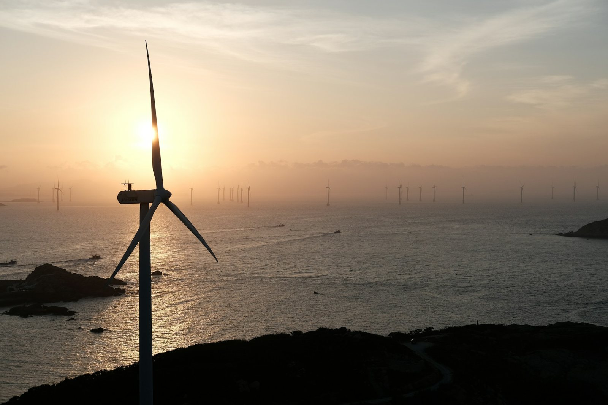
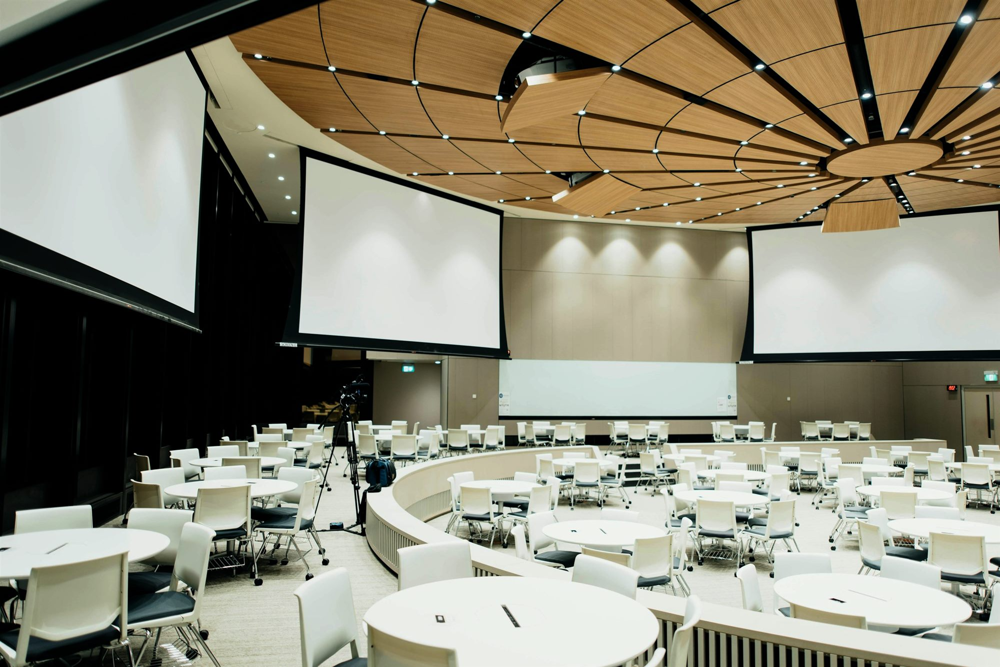

Invest in Nigeria's Clean
Energy Future
The One-Stop Investment Platform (OSIP) is Nigeria's federal gateway for clean energy investment. Find the rules and licences that apply to your project, the incentives and financing open to it, and the opportunities and agencies behind them.
How Can We Help You Today?
Whether you are exploring the Nigerian market for the first time or expanding an existing energy portfolio, OSIP provides the information you need to make informed investment decisions.
Priority Investment Opportunities
Validated projects open to private capital across Nigeria's energy and infrastructure pipeline.
ID: 2024-SOL-11
Solar Power Naija - Phase II
categorySector: Solar Stage 2: Under Development Cleared by Federal Ministry of PowerInvestment Amount
USD 420 m
ID: 2025-WND-02
Katsina Wind Farm Phase I
categorySector: Wind Stage 3: Under Implementation Cleared by Federal Ministry of PowerInvestment Amount
USD 210 m
ID: 2024-STG-07
Nasarawa Grid-Scale Battery Storage
categorySector: Storage Seeking investor interest Cleared by Federal Ministry of PowerInvestment Amount
USD 350 m
Sectors
 Solar
Utility-scale and distributed solar PV generation projects.
View project details
Solar
Utility-scale and distributed solar PV generation projects.
View project details
 Wind
Onshore wind generation across high-potential corridors.
View project details
Wind
Onshore wind generation across high-potential corridors.
View project details
 Storage
Battery energy storage systems (BESS) and grid balancing.
View project details
Small Hydro
Run-of-river and small-scale hydropower generation.
View project details
Storage
Battery energy storage systems (BESS) and grid balancing.
View project details
Small Hydro
Run-of-river and small-scale hydropower generation.
View project details
 Green Mobility
Electric vehicles, charging infrastructure and clean transport.
View project details
Green Mobility
Electric vehicles, charging infrastructure and clean transport.
View project details
 Energy Efficiency
Demand-side efficiency, ISO 50001 and industrial energy savings.
View project details
Clean Cooking
Improved cookstoves and clean fuel alternatives to biomass.
View project details
Bioenergy
Biomass, biogas and waste-to-energy power generation.
View project details
Energy Efficiency
Demand-side efficiency, ISO 50001 and industrial energy savings.
View project details
Clean Cooking
Improved cookstoves and clean fuel alternatives to biomass.
View project details
Bioenergy
Biomass, biogas and waste-to-energy power generation.
View project details
 Agriculture PUE
Productive use of energy for agro-processing and rural livelihoods.
View project details
Agriculture PUE
Productive use of energy for agro-processing and rural livelihoods.
View project details
 Green Hydrogen
Electrolysis-based hydrogen production and export potential.
View project details
Green Hydrogen
Electrolysis-based hydrogen production and export potential.
View project details
Explore by State
View all states arrow_forwardDiscover investment profiles, incentives and published opportunities across Nigeria's leading states.
 Enugu
View profile
Enugu
View profile
Data and Insights
Four headline numbers on Nigeria's energy transition. Grid performance, the project pipeline and market trends sit in full on the Data tab.
National totals for Nigeria as a whole. Investment, tracked projects and installed capacity are pending source validation and are stated as at June 2026; states covered is the Federal Republic of Nigeria administrative structure, a constant rather than an estimate. See the sources on the Data tab
Investor Guide to Nigeria's Clean Energy Sector
A practical guide designed to help investors understand Nigeria's clean energy market, regulatory environment, financing landscape, and project development process.
Why Invest in Nigeria?
Market fundamentals, demand drivers, and growth outlook.
Explore data and insights
Finance
Tax holidays, customs incentives, EDTI, Pioneer Status, and financing support.
See tax and fiscal incentivesFinance by sector: Solar Wind Storage Small Hydro Green Mobility Energy Efficiency Clean Cooking Bioenergy Agriculture PUE Green Hydrogen
Regulations
Licensing pathways, permits, environmental approvals, and compliance requirements.
Find your regulatory pathway
Sectors
Technology-specific opportunities and investment entry points.
Browse the sectors
State Investment Profiles
Subnational investment environments and state-level opportunities.
Invest by stateYour Investment Journey
Find a project
Browse verified opportunities by sector and state, and shortlist the ones that fit your mandate.
Check eligibility
See the licences, permits and ownership rules that apply to the opportunity before you commit.
Prepare requirements
Gather the documents and approvals the opportunity and its responsible agency ask for.
Apply
Register your interest and submit to the agency named on the opportunity.
Track
Follow the project's readiness status and stay in contact with the responsible agency through to financial close.
News
Stay updated with the latest developments shaping Nigeria's energy investment landscape.
Govt upbeat on Nyerere Hydropower Project completion
Government has given an update on progress at the Nyerere hydropower project and the timeline it now expects for completion.
Read More
Offshore Wind Potential in Lagos Coastline Explored by Global Investors
International developers are assessing the wind resource along the Lagos coastline and what an offshore project there would require.
Read MoreMajor Update on AKK Gas Pipeline: Project Reaches 85% Completion
The Ajaokuta-Kaduna-Kano gas pipeline has passed 85% completion, with the remaining sections and tie-ins now under way.
Read MoreNew Electricity Act Signed into Law: What it Means for Private Investors
The Electricity Act changes who licenses what between federal and state level, and what private developers have to file.
Read More
Nigeria Expands Renewable Energy Investment Pipeline
The Federal Government has announced new initiatives aimed at accelerating private-sector investment across renewable energy technologies, including solar, storage, small hydro, and green hydrogen.
Read MoreNiger Delta Pilot: Green Hydrogen Production Site Groundbreaking
Work has started on the Niger Delta green hydrogen pilot, the first site of its kind in the country.
Read MoreEvents
Stay informed about upcoming conferences, investor forums, workshops, and stakeholder engagements.

Nigeria Renewable Energy Investment Forum 2027
Join policymakers, investors, developers, financiers, and industry leaders to explore opportunities across Nigeria's rapidly growing clean energy sector.
View Event
Enugu State Investment Roadshow
The state investment agency presents its pipeline, incentives and land process to developers and financiers.
View Event
Clean Energy Project Financing Workshop
A working session on how clean energy projects are structured and financed, and what lenders ask for.
View Event
Regulatory Compliance Masterclass
Licences, permits and approvals for grid-connected, embedded and off-grid projects, and the order to take them in.
View Event
Northern Corridor Wind & Storage Forum
Wind and storage prospects along the northern corridor, with the states and agencies involved.
View Event
Clean Cooking & PUE Investor Clinic
Clean cooking and productive-use business models, and the finance and distribution routes open to them.
View EventWhy OSIP?
The One-Stop Investment Platform (OSIP) is Nigeria's data and information gateway for investing in renewable energy and energy efficiency.
It exists to give investors a single, reliable entry point into a market where the opportunity is clear but the information has been scattered.
Our Partners
OSIP is supported through collaboration between government institutions, regulators, development partners, and industry stakeholders working to accelerate investment in Nigeria's energy transition.